Purpose and central argument
A vinyl LP is a mechanical storage and reproduction system. Sound must be converted into physical groove movement, traced by a stylus and converted back into an electrical signal. Every production decision must therefore respect geometry, available surface area and the ability of real playback equipment to track the groove.
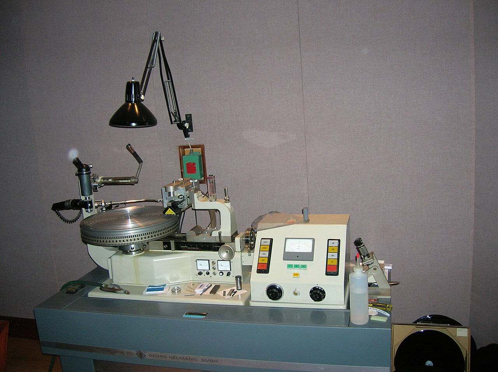
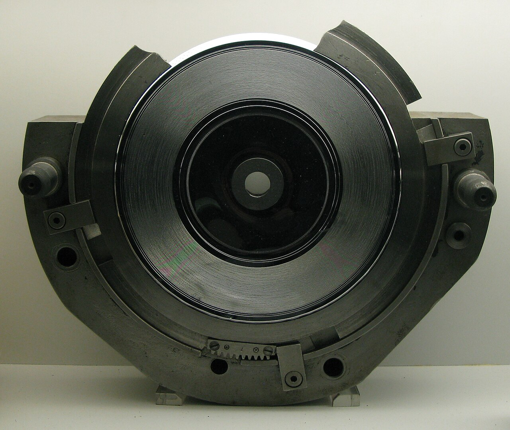
What the medium constrains
- Low-frequency amplitude and stereo width
- High-frequency and transient intensity
- Programme length and cutting level
- Track placement across each side
- Mechanical tracking and playback tolerance
What engineers control
- Bass centring and phase compatibility
- De-essing and transient management
- Dynamic range and perceived loudness
- Groove spacing, cutting level and side length
- Album sequence and vinyl-specific mastering
Where the compromises occur
- Mixing: decisions about stereo placement, phase, bass, brightness and dynamics.
- Mastering: adaptation of the final mix to the physical limits of the disc.
- Lacquer cutting: conversion of the electrical signal into a modulated spiral groove.
- Pressing: replication of that groove, with possible manufacturing variation.
- Playback: tracing accuracy, turntable speed, alignment, stylus profile and phono-stage equalization.
Groove geometry, stereo encoding and cross-channel interaction
Stereo is not recorded as two separate grooves. Both channels are encoded into the two walls of one V-shaped groove, commonly using a 45/45 system.
How stereo is represented
The groove's lateral, side-to-side component primarily represents the summed signal, while its vertical component reflects the difference between channels:
L + R → lateral component
L − R → vertical component
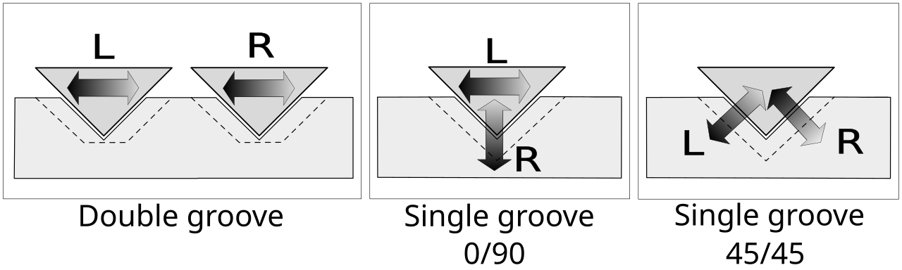
In-phase, centred material therefore produces mostly lateral movement. Strong out-of-phase or widely separated information produces more vertical movement. Excessive vertical modulation is harder to cut and track and can make a groove shallow or mechanically unstable.
“Crossing over” of tracks or channels
Several different effects are sometimes described informally as crossover:
| Effect | What is actually happening | Likely consequence |
|---|---|---|
| Left/right crosstalk | The cartridge and groove geometry do not provide perfect channel separation. | A narrower stereo image than the source or a small amount of one channel appearing in the other. |
| Adjacent-groove pre-echo | A loud groove can influence an adjacent groove during cutting or pressing. | A faint preview, often one revolution before a loud transient. |
| Out-of-phase low-frequency stereo | Large L−R bass content creates excessive vertical groove motion. | Mistracking, distortion, reduced cutting level or, in severe cases, skipping. |
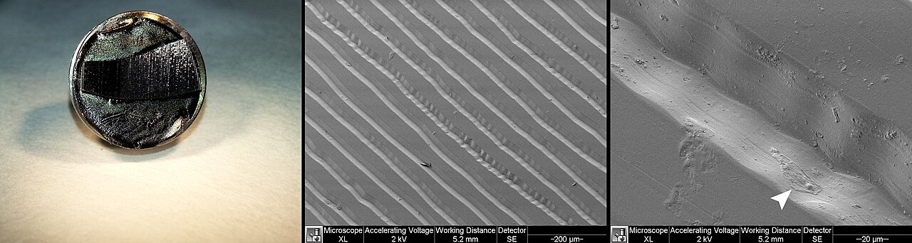
Heavy stereo drums
Kick drums, floor toms and low-frequency drum ambience can create large excursions, particularly when hard-panned, decorrelated or processed with stereo widening. Fast peaks also demand rapid stylus acceleration. The concern is therefore not simply “heavy drums”; it is the combination of low-frequency energy, phase difference, transient intensity and stereo placement.
There is no single mandatory crossover frequency. A mastering engineer may begin investigating somewhere around 100 to 300 Hz, but the appropriate treatment depends on level, duration, phase, side length and the cutting system.
Constant rotational speed, variable linear speed
An LP rotates at a constant angular speed, usually 33⅓ rpm. The groove does not pass the stylus at a constant linear speed: it travels much faster at the outer edge than near the label.
linear speed = 2π × groove radius × revolutions per second
Because the groove radius decreases continuously, the physical distance available to represent one second of music also decreases. The wavelength of every recorded frequency becomes shorter toward the centre.
| Disc location | Linear groove speed | Engineering implication |
|---|---|---|
| Outer grooves | Highest | More physical groove length per second, allowing cleaner high frequencies, transients and complex material. |
| Middle of side | Moderate | Generally robust, but programme level and density increasingly matter. |
| Inner grooves | Lowest | Shorter recorded wavelengths, greater tracing difficulty and increased distortion risk. |
Inner-groove distortion
Near the label, high-frequency groove modulations become extremely compact. The playback stylus cannot trace them as perfectly as the cutting stylus created them. Distortion, sibilance and loss of high-frequency clarity can therefore increase toward the end of a side.
Sequencing as sound engineering
Track order is not purely artistic. Engineers may place the loudest, brightest or most demanding track near the beginning of a side and reserve quieter, less dense material for the inner grooves. Ballads or tracks with simpler arrangements can be more tolerant of the reduced linear speed.
33⅓ rpm versus 45 rpm
A 45 rpm cut provides higher linear speed at the same radius. This can improve transient definition, high-frequency tracing and signal-to-noise performance, but it consumes more groove length per minute. The trade-off is shorter playing time or more discs.
Bass, treble, transients, level and programme length
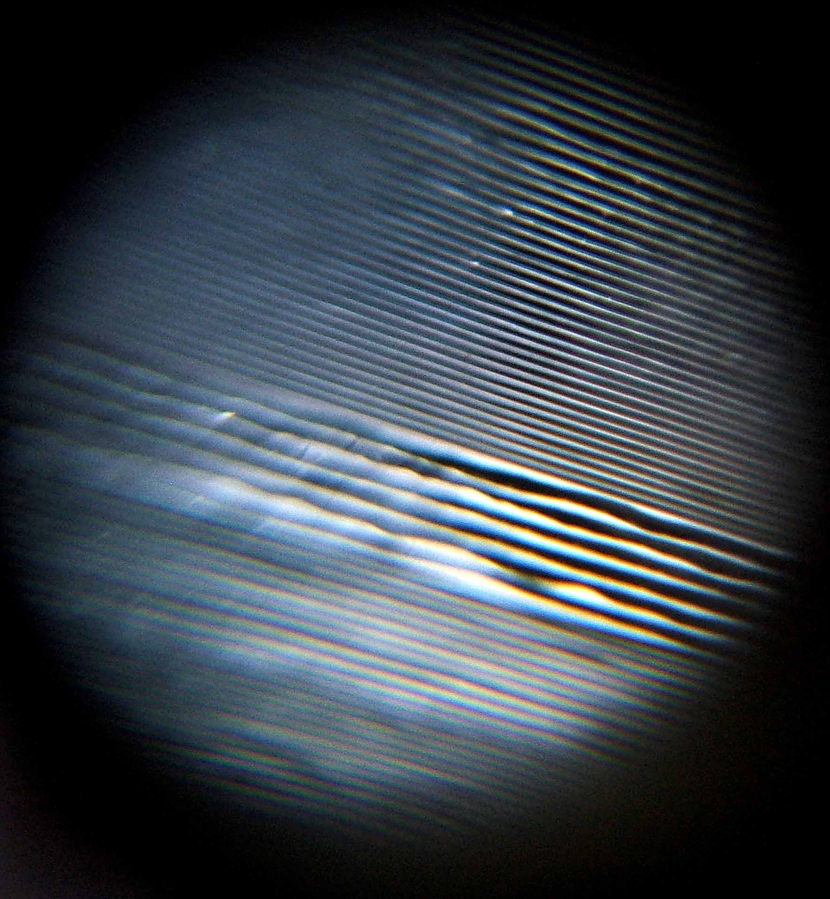
Low frequencies
Deep bass produces large groove excursions. If those frequencies differ strongly between channels, they also create substantial vertical motion. Mastering commonly uses low-frequency centring, elliptical equalization, phase correction or selective attenuation. Subsonic content that has no musical value may be removed because it wastes groove area and can unsettle playback systems.
High frequencies and sibilance
High-frequency signals create very fine, rapidly changing modulations. Strong vocal sibilance, hi-hats, cymbals and bright distortion can challenge both the cutter head and the playback stylus. The master may require de-essing, dynamic equalization or modest high-frequency control.
Transient material
Short peaks such as kick and snare attacks can require high groove velocity and acceleration. Engineers may shape only the problematic peaks rather than compressing the entire mix, preserving impact while maintaining trackability.
Programme length versus level
| Condition | Required compromise | Expected result |
|---|---|---|
| Short side | Grooves can be spaced more generously and cut at a higher level. | Potentially stronger dynamics and better signal-to-noise performance. |
| Long side | Grooves must be packed more closely and usually cut more quietly. | Less margin above surface noise and less tolerance for extreme bass or dynamics. |
| Very loud or bass-heavy programme | Wider groove excursions consume more disc area. | Reduced available playing time or the need for level and spectral control. |
Dynamic range
Vinyl does not have greater technical dynamic range than modern digital formats. Loud signals consume physical space; very quiet signals approach the mechanical noise floor. The useful result is nevertheless programme-dependent: a well-judged vinyl master can preserve musically meaningful contrasts without chasing maximum numerical loudness.
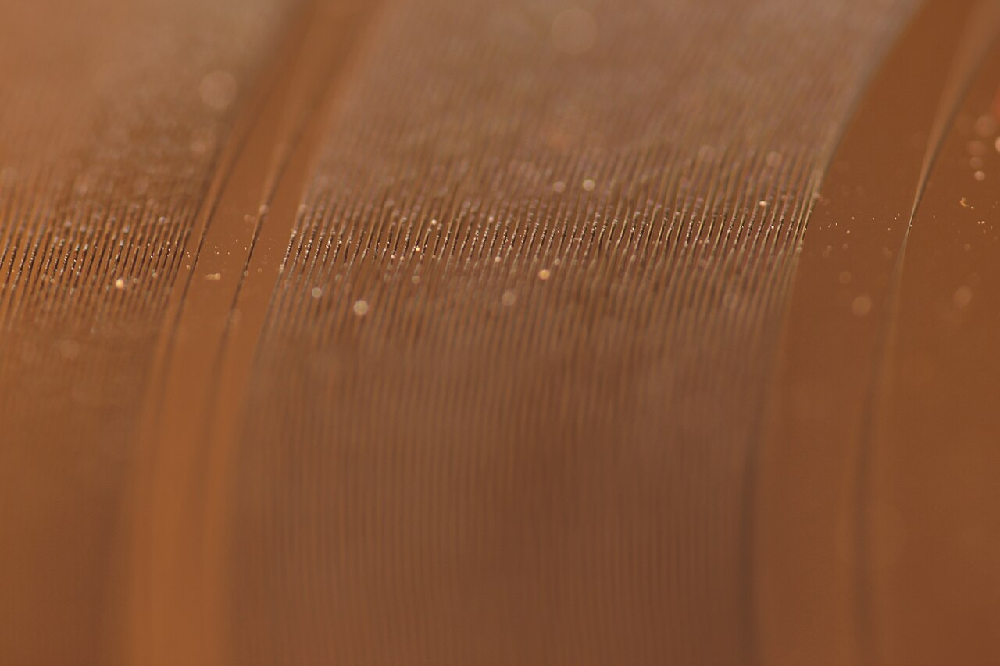
RIAA equalization
RIAA equalization is a complementary recording and playback system. The frequency balance is deliberately altered during lacquer cutting and restored by the phono preamplifier during playback.
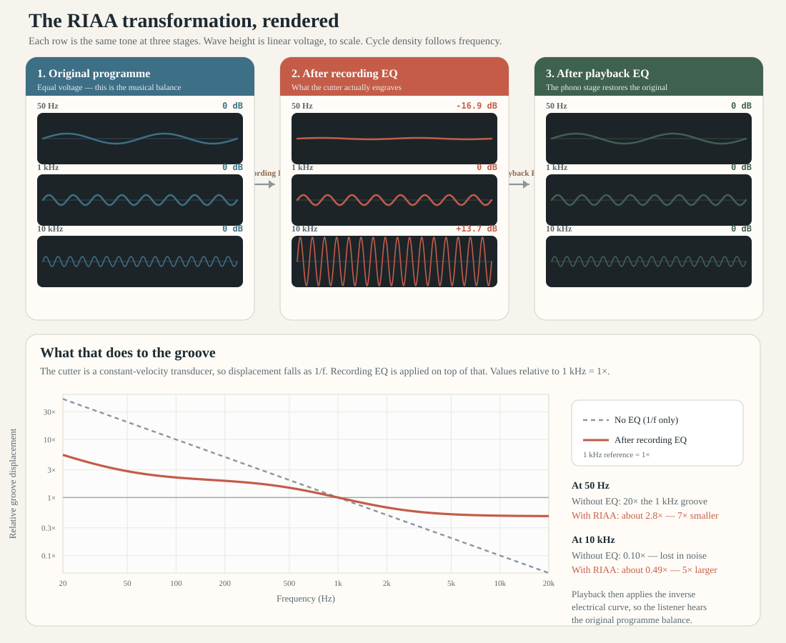
Move the frequency. The middle trace is the electrical signal after recording EQ — what is cut. The right trace is after the complementary playback EQ. The bar is groove displacement relative to the same tone at 1 kHz with RIAA applied.
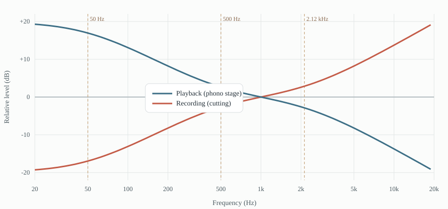
During cutting
- Low frequencies are attenuated.
- High frequencies are boosted.
- Bass excursions become smaller, saving groove area.
- High-frequency information is recorded farther above the surface-noise floor.
During playback
- The phono stage boosts the bass.
- It attenuates the treble by the complementary amount.
- The intended tonal balance is reconstructed.
- High-frequency surface hiss is reduced along with the treble correction.
Why it is necessary
Cutting an uncorrected full-frequency signal would be inefficient. Deep bass would occupy excessive width, sharply reduce playing time and create tracking problems. At the other end of the spectrum, surface noise would be too prominent relative to the recorded treble. Pre-emphasis and complementary de-emphasis address both problems.
The standardized curve
The RIAA characteristic is defined through three time constants, approximately corresponding to turnover regions at 50 Hz, 500 Hz and 2.12 kHz. The transitions are gradual rather than abrupt. Relative to the midband, bass is strongly reduced during cutting and treble strongly increased; playback applies the inverse response.
| Region | Cutting tendency | Playback tendency | Purpose |
|---|---|---|---|
| Low bass | Attenuate | Boost | Limit groove excursion and conserve space. |
| Midrange | Transition/reference region | Complementary transition | Maintain a standardized reconstruction. |
| High frequencies | Boost | Attenuate | Improve effective signal-to-noise performance and suppress playback hiss. |
Why the phono stage matters
A phono preamplifier is not merely increasing a cartridge's small output. It also applies the inverse RIAA curve with sufficient accuracy, gain and headroom. Deviations can alter tonal balance; inadequate overload margin can distort strong transients; cartridge loading can further affect the response.
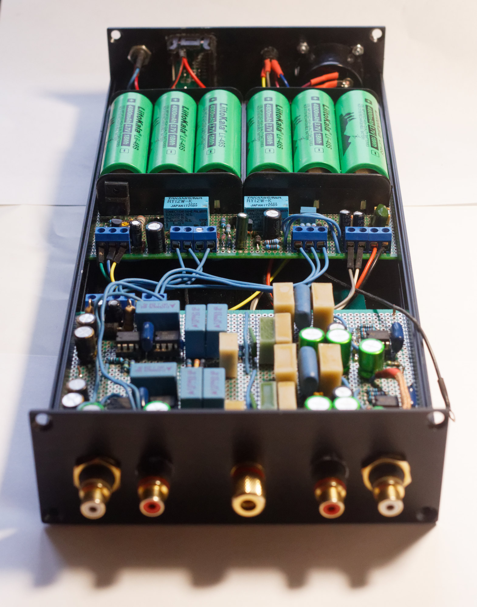
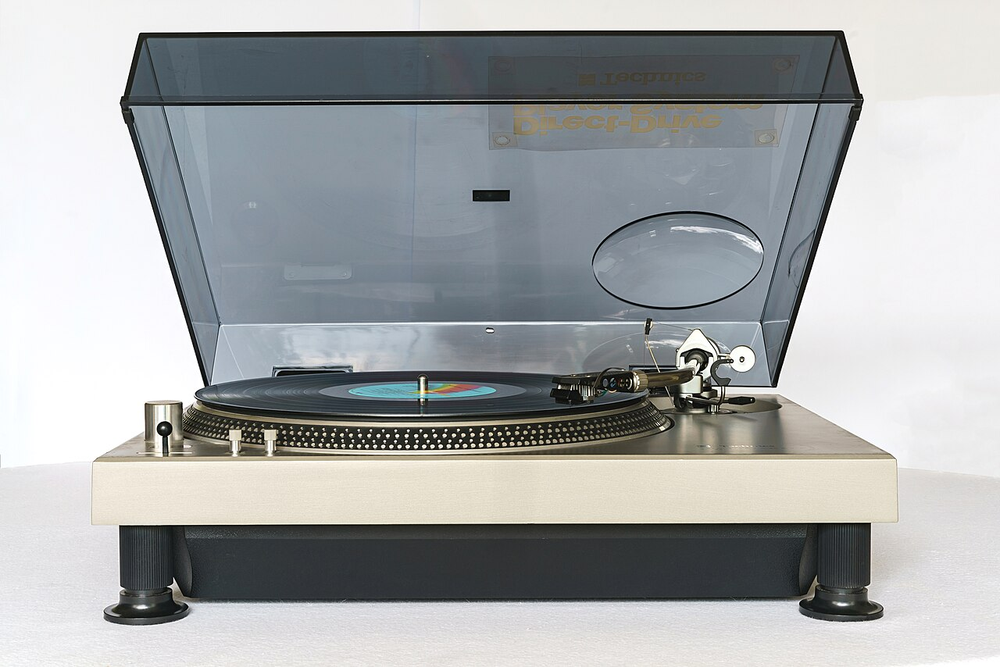
Historical standardization
The RIAA standard was formally approved in January 1954 after a period in which record labels used many incompatible equalization curves. The standard rapidly became the industry reference and was already assumed by the stereo LP era. Before standardization, accurate playback often required label-specific equalization settings.
Constant amplitude versus constant velocity
This distinction explains why disc equalization is necessary. Groove modulation can be described either by the stylus displacement, meaning how far it moves, or by stylus velocity, meaning how quickly that displacement changes.
Constant amplitude
The groove excursion remains the same as frequency changes. Because velocity rises with frequency, doubling the frequency doubles the stylus velocity for the same displacement.
velocity = 2π × frequency × amplitude
Constant velocity
Stylus velocity remains constant as frequency changes. Groove displacement is therefore inversely proportional to frequency: doubling the frequency halves the physical excursion.
amplitude = velocity ÷ (2π × frequency)
| Recording behaviour | Benefit | Problem if used across the full spectrum |
|---|---|---|
| Constant amplitude | Keeps high-frequency groove modulation physically large enough to remain above surface irregularities. | Velocity and acceleration become excessive at high frequencies, placing heavy demands on the cutter and playback stylus. |
| Constant velocity | Prevents low-frequency displacement from expanding without limit and consuming excessive groove width. | High-frequency groove excursions become extremely small and increasingly vulnerable to surface noise and tracing limitations. |
The practical solution is a compound characteristic rather than either behaviour alone. The RIAA curve uses its turnover regions to move between regimes: it controls low-frequency excursion, maintains workable modulation through the midrange and applies high-frequency pre-emphasis so that treble is recorded sufficiently above the surface-noise floor. The complementary playback curve then reconstructs the intended tonal balance.
Exact RIAA time constants and turnover frequencies
| Time constant | Equivalent frequency | Role |
|---|---|---|
| 3180 µs | 50.05 Hz | Low-frequency shelf |
| 318 µs | 500.5 Hz | Turnover region |
| 75 µs | 2122 Hz | High-frequency pre-emphasis/de-emphasis region |
Relative to 1 kHz, the playback curve is approximately +19.3 dB at 20 Hz, +17 dB at 50 Hz, +13.2 dB at 100 Hz, −13.7 dB at 10 kHz and −19.5 dB at 20 kHz.
How RIAA equalization is implemented
A phono preamplifier performs two separate functions: significant gain for the very small cartridge signal and application of the inverse RIAA playback curve. Implementations generally fall into three families:
- Passive RIAA: gain stage, passive RC equalization network, then additional gain.
- Active RIAA: the RIAA network is incorporated within an amplifier feedback loop.
- Integrated phono stages: op-amp or dedicated phono IC based designs using precision external resistor-capacitor networks.
Why phono preamps can sound different
Unlike digital playback, phono reproduction depends significantly on the quality of the equalization stage. Differences arise from RIAA accuracy, component tolerances, overload margin, noise performance, cartridge loading and circuit topology. High-end designs commonly target RIAA accuracy better than ±0.1 dB, whereas inexpensive designs may deviate by several dB at frequency extremes. Consequently the phono preamplifier is one of the most influential components in the analogue playback chain.
Mechanical and playback limitations
| Issue | Cause | Audible effect | Mitigation |
|---|---|---|---|
| Wow | Slow rotational-speed variation | Gradual pitch wandering | Accurate motor control, platter inertia and sound mechanical condition |
| Flutter | Faster speed variation | Pitch roughness or shimmer | Stable drive, bearings and belt or idler system |
| Off-centre pressing | Spindle hole or groove not perfectly centred | Cyclic pitch rise and fall once per revolution | Manufacturing precision or replacement of a defective pressing |
| Tracing distortion | Playback stylus cannot exactly follow the geometry cut by the cutting stylus | Harmonic and intermodulation distortion | Suitable stylus profile, alignment and conservative cutting |
| Inner-groove distortion | Lower linear speed and compact wavelengths near the label | Harshness, sibilance and reduced clarity | Sequencing, level control, stylus geometry and alignment |
| Surface noise | Dust, static, wear, scratches and pressing imperfections | Hiss, crackle, clicks and pops | Cleaning, antistatic handling, careful storage and good pressing quality |
| Channel crosstalk | Imperfect separation in cartridge and groove playback | Reduced stereo separation | Cartridge quality, azimuth adjustment and sensible mix width |
Tonearm and cartridge setup
Tracking force, anti-skate, cartridge alignment, vertical tracking geometry, azimuth and stylus condition affect distortion and wear. An excellent pressing can sound poor on a badly configured turntable, while careful setup can recover more of the information present in the groove.
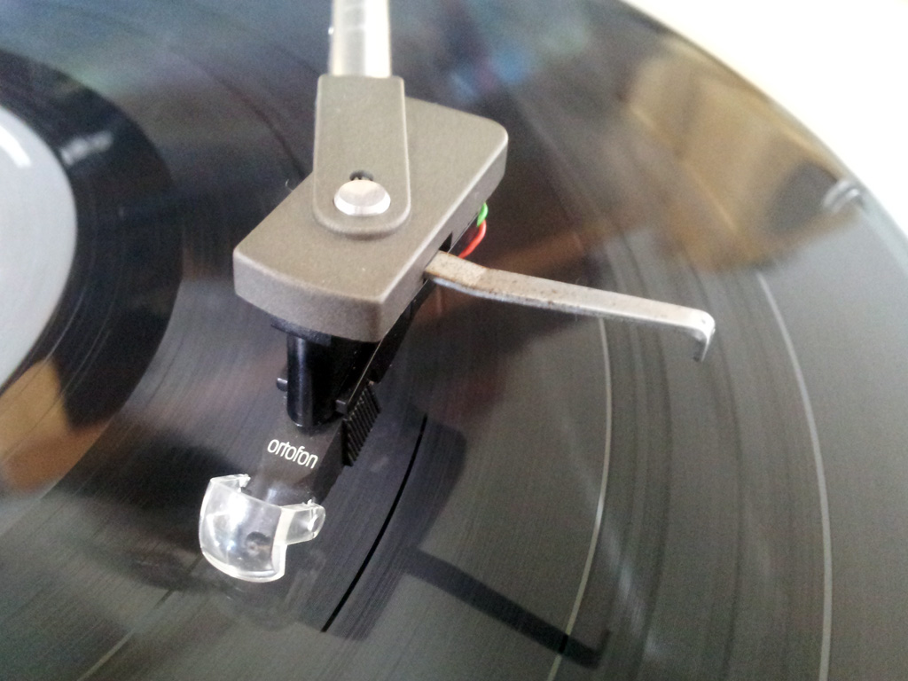
Wear and robustness
Playback is physical contact. Dirt, damaged styli and incorrect tracking force can accelerate wear. The production master must therefore work not only on a reference cutting-room system but across a broad range of consumer cartridges and tonearms.
How constraints can support a better experience
Vinyl's limitations do not make it technically superior. They can, however, force useful decisions that improve coherence, comfort and musical communication.
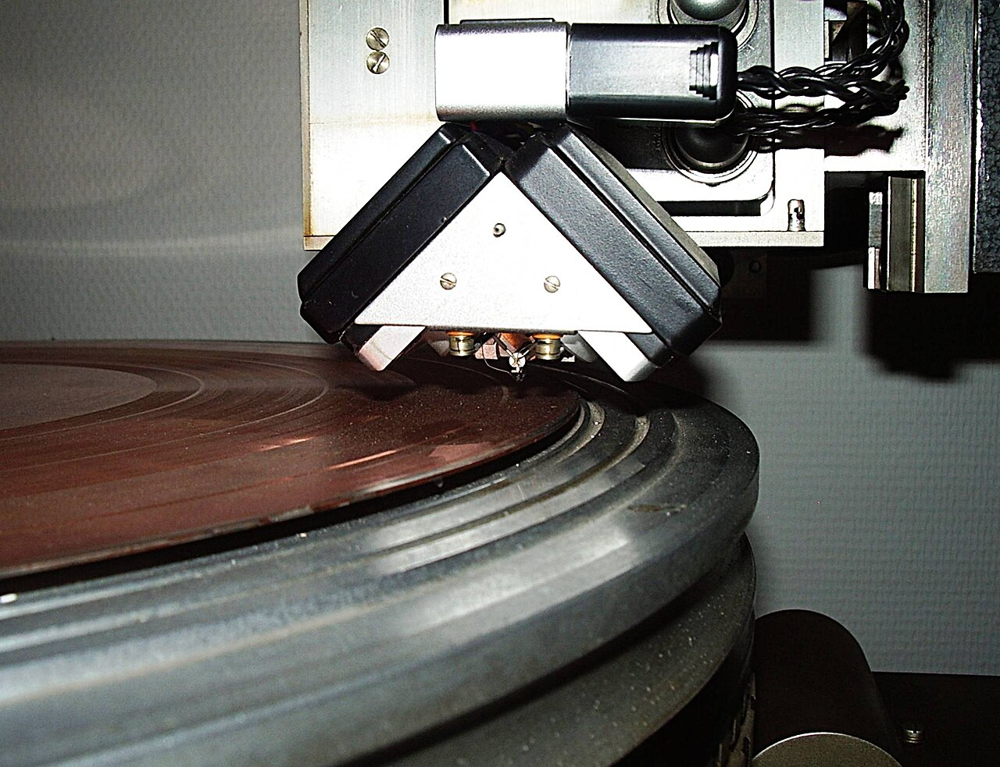
A more stable low end
Centring deep bass and correcting phase can make kick drum and bass feel focused and solid. The result may be more convincing even though some stereo width has been sacrificed.
Controlled brightness
De-essing and management of aggressive cymbals can reduce fatigue. The improvement arises from careful mastering rather than from an inherent inability of digital audio to reproduce treble.
Selective dynamics
Instead of maximizing loudness, an engineer may manage individual peaks and preserve useful contrasts. Some vinyl editions therefore sound more open than heavily limited digital releases.
Deliberate sequencing
Placing demanding tracks where the groove performs best can reinforce the dramatic shape of each side. The physical pause required to turn the record also creates an intentional midpoint.
The mastering-by-constraint effect
Digital production permits extreme bass, stereo expansion, brightness and limiting without immediate mechanical failure. Vinyl requires the engineer to ask whether each extreme serves the music. Optimization replaces simple maximization.
Dedicated master versus format mythology
When listeners prefer a vinyl edition, the decisive factor may be a different master rather than the physical medium itself. A vinyl-specific master may use less limiting, better-controlled high frequencies, more coherent bass and a deliberately chosen sequence. Comparing it with a louder digital master does not isolate the sound of vinyl; it compares two different engineering decisions.
What excellent vinyl engineering requires
- Start from a clean, high-resolution source without unnecessary digital clipping or limiting.
- Inspect bass phase and stereo width rather than applying an indiscriminate mono rule.
- Control sibilance and high-frequency peaks selectively.
- Match cutting level and groove spacing to the actual programme length.
- Sequence each side with declining linear speed in mind.
- Make and inspect a reference cut where the project warrants it.
- Validate pressing quality and listen on more than one realistic playback system.
Consolidated reference
| Issue | Physical cause | Typical response | Potential experiential benefit |
|---|---|---|---|
| Stereo bass instability | Large vertical modulation from L−R low-frequency energy | Centre or narrow deep bass; correct phase | Focused, stable low end |
| Heavy stereo drums | Combined transient, bass and phase demands | Selective transient control and low-band narrowing | Punch without unstable imaging |
| Inner-groove distortion | Declining linear speed | Place demanding tracks earlier; manage level and treble | More deliberate album sequence |
| Long side | Limited surface area | Lower cutting level and denser pitch | Encourages concise side structure |
| Sibilance and bright cymbals | Fine, rapid groove modulation | De-essing and dynamic high-frequency control | Smoother, less fatiguing tone |
| Extreme loudness | High groove velocity, heat and tracking demand | Peak management and moderated limiting | Potentially more breathing space |
| Bass size and surface noise | Physical groove excursion and mechanical noise floor | RIAA pre-emphasis and inverse playback equalization | Practical side length and usable signal-to-noise ratio |
| Wow, flutter and off-centre discs | Rotational and manufacturing errors | Good turntable and pressing quality | No intrinsic benefit; these are defects to minimize |
Final assessment
Vinyl mastering is the management of a chain of mechanical constraints. Groove geometry restricts stereo bass; constant rotational speed produces declining linear resolution; programme length competes with level and noise; high-frequency material challenges cutting and tracing; RIAA equalization makes the format practical; and playback quality depends on precise mechanics.
The best practitioners do not merely remove problems. They balance spectral energy, stereo image, dynamics, sequence and playback resilience in service of the music. Those choices can make a vinyl edition especially coherent and enjoyable. The lesson is broader than vinyl: technical constraints, when understood rather than ignored, can sharpen artistic and engineering judgement.